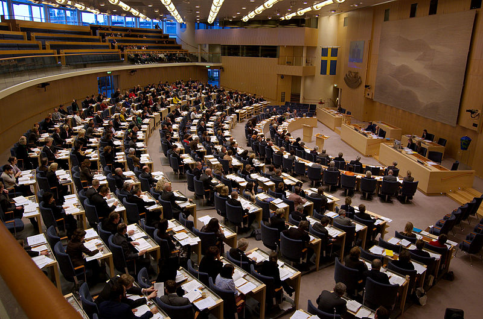
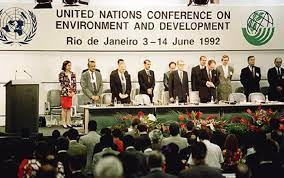

-
Conferência de Estocolmo
Foi um marco histórico por ser tratar do primeiro grande encontro internacional com representantes de diversas nações para discutir os problemas ambientais. Teve como desdobramentos a elaboração da Declaração de Estocolmo, com 26 princípios e a criação do Programa das Nações Unidas para o Meio Ambiente (PNUMA)
-
Conferência Rio - 92
A Rio-92 resultou em diversos acordos importantes, incluindo a Agenda 21, um plano de ação global para o desenvolvimento sustentável, a Declaração do Rio sobre Meio Ambiente e Desenvolvimento, que estabeleceu princípios fundamentais para a gestão sustentável dos recursos naturais e a Convenção Quadro das Nações Unidas sobre Mudança do Clima, que visava reduzir as emissões de gases de efeito estufa na atmosfera.
-
Conferência Rio+10

Na Rio+10, os líderes mundiais renovaram seu compromisso de alcançar o desenvolvimento sustentável e discutiram novas formas de atingir esse objetivo. Os temas abordados incluíram: pobreza, desenvolvimento econômico, proteção ambiental, segurança alimentar, água potável, energia, mudança climática, saúde e educação.
-
Conferência Rio + 20

A conferência teve como objetivo renovar o compromisso global com o desenvolvimento sustentável e examinar maneiras de reduzir a pobreza, promover a igualdade social e proteger o meio ambiente, ao mesmo tempo em que se busca o crescimento econômico.
O que e uma conferencia ambiental?
Conferências ambientais reúnem líderes de diversos países para discutir e ampliar os debates sobre impactos ambientais e sobre a necessidade de promover a sustentabilidade. Conferências ambientais reúnem representantes de vários países para discutir questões sobre o meio ambiente.
Porque as conferencias foram criadas?
As conferências ambientais foram criadas para promover a conscientização e o diálogo internacional sobre questões ambientais globais, bem como para desenvolver acordos e ações concretas para enfrentar esses desafios. As conferências geralmente reúnem representantes de governos, organizações não governamentais, cientistas, empresas e outros grupos interessados para discutir uma variedade de questões ambientais, como mudanças climáticas, conservação da biodiversidade, gestão de resíduos, poluição e uso de recursos naturais. Entre as principais conferências ambientais estão a Conferência das Nações Unidas sobre Meio Ambiente e Desenvolvimento (Rio 92), a Conferência das Nações Unidas sobre Mudanças Climáticas (COP), a Conferência das Partes da Convenção sobre Diversidade Biológica (COP-MOP) e a Conferência Internacional sobre Desenvolvimento Sustentável. As conferências ambientais são importantes para a tomada de decisões informadas e para a promoção de políticas e práticas sustentáveis em todo o mundo.9 Curiosidades sobre as conferências Ambientais
1. A primeira conferência ambiental internacional foi realizada em
Estocolmo, Suécia, em 1972, e foi chamada de Conferência das Nações Unidas o Meio Ambiente Humano.
2. A Conferência das Nações Unidas sobre o Meio Ambiente e o
Desenvolvimento, também conhecida como Cúpula da Terra, foi realizada no Rio de Janeiro em 1992. Foi
nesta conferência que a Convenção-Quadro das Nações Unidas sobre Mudança do Clima (UNFCCC) foi
adotada.
3. A Conferência das Nações Unidas sobre Mudança do Clima (COP) é
realizada anualmente desde 1995. A primeira COP foi realizada em Berlim, Alemanha.
4. A COP21, realizada em Paris em 2015, resultou no Acordo de Paris, que
tem como objetivo limitar o aumento da temperatura global a menos de 2°C acima dos níveis
pré-industriais.
5. A COP25, realizada em Madrid em 2019, foi a mais longa COP da história,
durando duas semanas a mais do que o previsto
6. Durante as conferências ambientais, os delegados dos países podem se
reunir em grupos informais para discutir questões específicas. Esses grupos são conhecidos como
"grupos de contato".
7. Além das discussões oficiais, as conferências ambientais muitas vezes
apresentam eventos paralelos, como apresentações culturais, exposições e fóruns de negócios verdes.
8. O número de delegados presentes nas conferências ambientais pode variar
muito. A COP21, por exemplo, atraiu cerca de 40.000 participantes, incluindo delegados, observadores
e jornalistas.
9. A COP26 será realizada em Glasgow, Escócia, em novembro de 2021. É
considerada uma das conferências mais importantes desde o Acordo de Paris em 2015, pois espera-se
que os países revejam e atualizem suas metas climáticas nacionais.